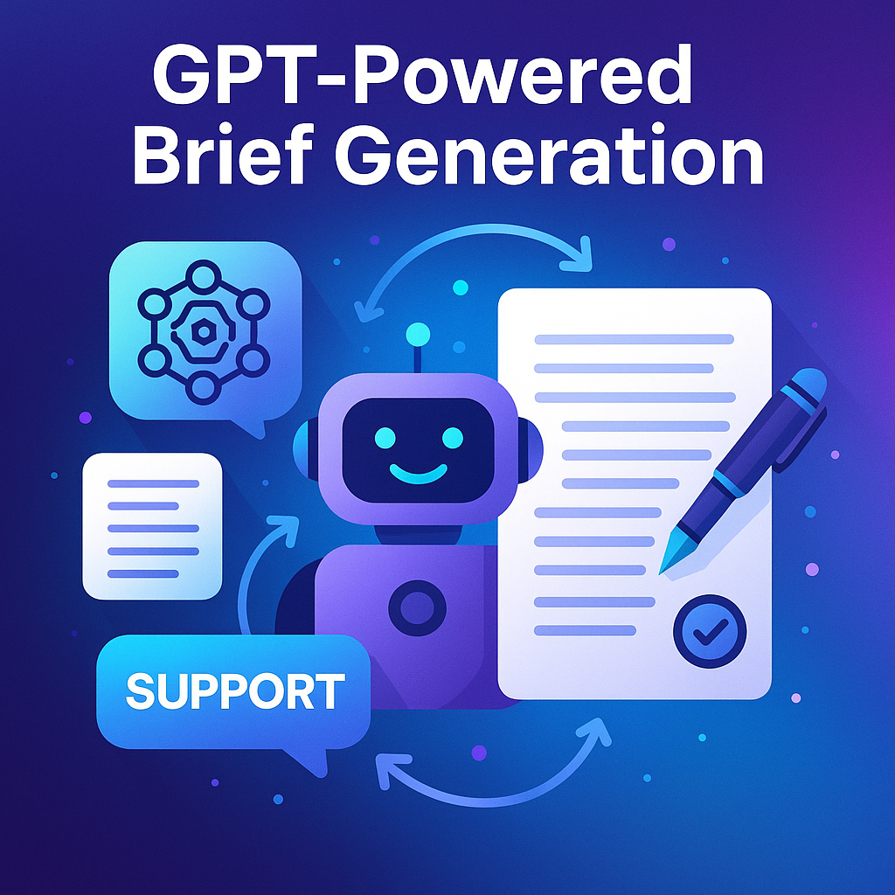
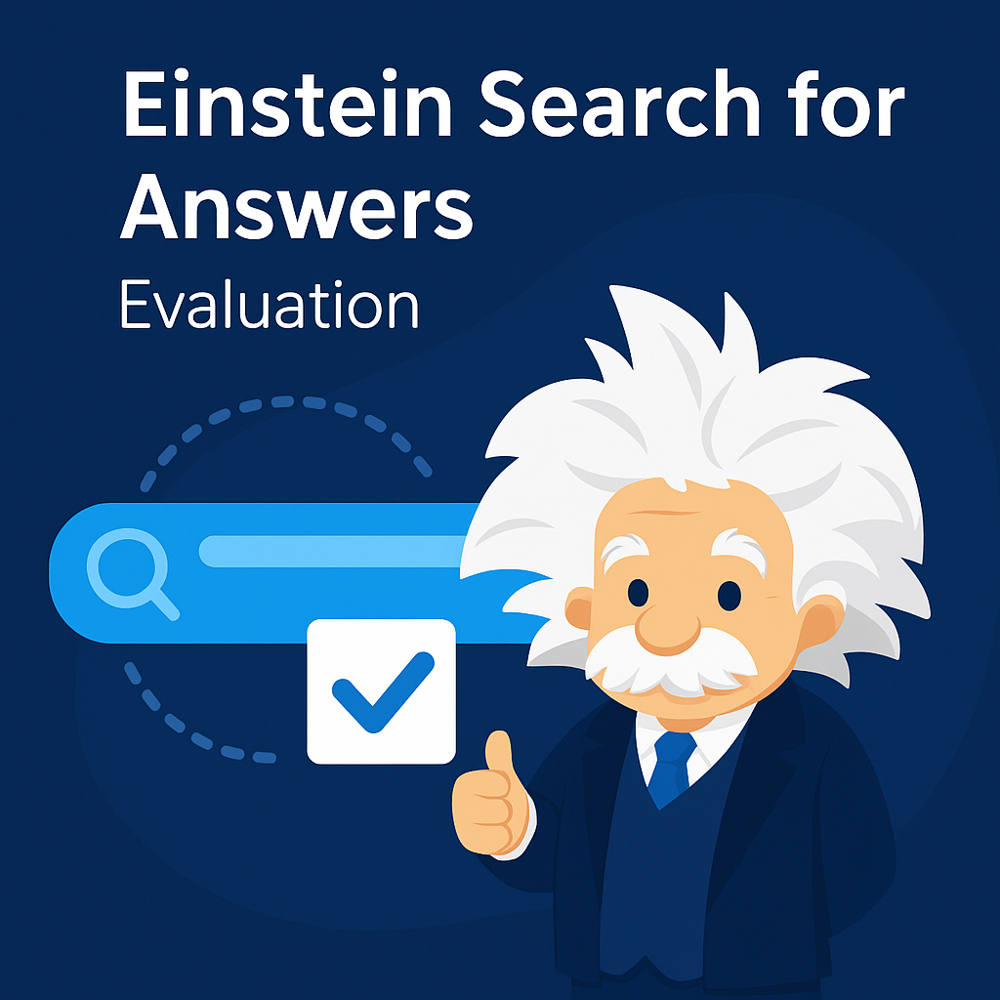
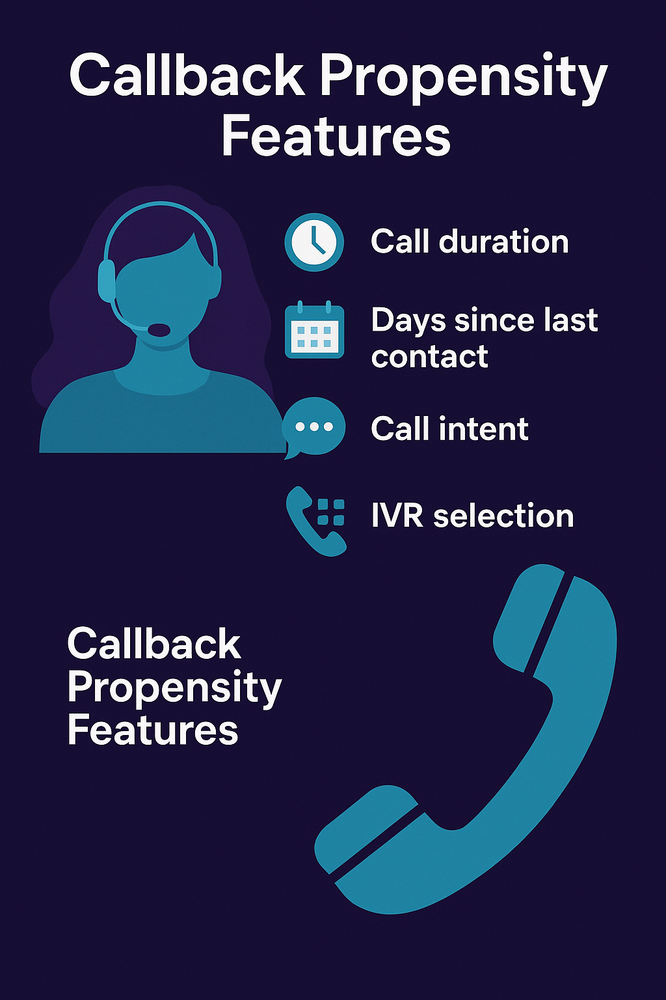

Work Experience
I design and deploy human-centered AI systems—turning noisy conversations and policy text into
clear, actionable intelligence. Below are the roles and projects where I delivered measurable impact.
Impact highlights
- Built a GPT-powered Brief Generation pipeline that structured 30k+ conversations into reusable Q&A briefs; validated ~90%+ match quality and reduced duplication to improve content reuse and coverage.
- Evaluated Salesforce Einstein Search for Answers on 1k+ real queries with accuracy/grounding/faithfulness scoring; authored DMO comparisons and instituted clarity-based validation for higher reliability.
- Led Agent Opportunity & Transfer Behavior analyses over 70k+ transcripts; surfaced self-solvable cases and disambiguation triggers to cut unnecessary transfers and effort.
- Developed callback prediction features (topics, intent, answer presence, resolution type); produced Tableau insights that informed proactive outreach and repeat-issue prevention.
NLP & LLMs
Prompt Engineering
Evaluation & QA
Tableau Dashboards
Python
Salesforce / Einstein
Automatic Data Processing (ADP), Roseland, NJ
Data Scientist – Emerging Solutions (Aug 2022 – Jun 2025)
- Brief Generation pipeline: Classified conversations (instructional/transactional), extracted topic/sub-topic, multi-intent segments, client questions, and agent solutions; matched briefs to Help & Support articles using embeddings and clarity checks; improved precision and reduced duplicate briefs across high-frequency tax topics.
- Content alignment & dedup: Replaced SBERT similarity with targeted GPT prompts for nuanced brief-to-article mapping; moved precision from ~35% toward ~50%+ in key domains and cut redundant briefs substantially.
- Einstein Search evaluation: Designed evaluation harness for 1k+ queries (fallback 2-query strategy), retrieved EKM sources, converted to JSON, and scored for accuracy, grounding, and faithfulness; documented DMO version gaps and recommended fix paths.
- Agent opportunity / transfer behavior: Mined 13 months of chat/case transcripts (~75k rows); identified self-solvable intents, multi-intent ambiguities, and confirmation prompts that trigger transfers; informed design of disambiguation logic to reduce handoffs.
- Callback prediction: Engineered LLM-derived signals (topic taxonomy, answer presence, resolution outcome) to model repeat-contact propensity; built Tableau visuals for cohort trends and proactive remediation.
- Label arbitration with LLM-as-judge: Compared LLM topic/sub-topic vs. Salesforce type/sub-type in full-transcript context; selected better label pairs with rationale to surface systematic misclassifications and training opportunities.
- Data storytelling: Delivered stakeholder-ready dashboards (Tableau) for topic trends, agent actions, and fix-forward opportunities; partnered with SMEs to prioritize content and automation backlogs.
PythonPandasOpenAI/GPT
EmbeddingsTableauSalesforce APIs
DatabricksEvaluation Harnesses
Automatic Data Processing (ADP), Roseland, NJ
Associate Application Developer (Jan 2020 – Aug 2021)
- Designed and implemented Python-based migration scripts using Atlassian APIs to transfer 1,000+ work items from Rally to Jira, improving reporting accuracy and audit traceability.
- Enhanced the enterprise One Login Page (OLP) platform by developing reusable ReactJS components for sign-in UX, integrating secure authentication flows with Java + Spring Boot, and optimizing backend response times by 20%.
- Collaborated with cross-functional teams to troubleshoot production issues, ensuring 99.9% uptime for authentication services.
PythonAtlassian APIsReactJS
JavaSpring BootREST APIs
AgileGit
Automatic Data Processing (ADP), Roseland, NJ
Global Product & Technology Intern (Jun 2019 – Aug 2019)
- Developed automated reporting pipelines for AWS Cost Explorer to track usage patterns, optimize capacity, and identify cost-saving opportunities.
- Designed visual dashboards and presented data-driven insights to leadership, influencing infrastructure budget decisions.
AWS Cost ExplorerPythonData Visualization
ExcelStakeholder Communication
Accenture Solutions Pvt. Ltd., Mumbai, India
Associate Software Engineer (Jan 2018 – Aug 2018)
- Delivered ETL workflows and analytics solutions for The Travelers Companies client, processing large-scale insurance datasets for operational reporting.
- Implemented data integration pipelines in Ab Initio to improve query performance and data availability across multiple systems.
- Collaborated with business analysts to ensure accuracy of financial and customer data for compliance reporting.
ETLAb InitioInformatica
TableauQlikViewSQL
Data Warehousing
Systems Engineering Research Center, Stevens Institute of Technology
Graduate Research Assistant (Aug 2019 – Dec 2019)
- Built advanced text and visual analytics dashboards to evaluate systems-engineering performance across multi-year research programs.
- Authored and co-authored peer-reviewed publications in IEEE Systems Journal and SysCon on applying data-driven insights to engineering process evaluation.
- Collaborated with multidisciplinary research teams, translating qualitative findings into measurable engineering metrics.
PythonData VisualizationText Analytics
TableauAcademic WritingResearch Methods

- Converted chats into atomic Q&A briefs aligned 1:1 with Help & Support articles; clarity + quote-match validation.
- Reduced duplication; improved precision on high-frequency tax topics; SME-ready review artifacts.
GPT-Powered Brief Generation
NLP • Prompt Engineering • Evaluation

Einstein Search for Answers — Evaluation
- 1k+ real queries with fallback & EKM retrieval; scored accuracy, grounding, faithfulness.
- Documented DMO variance; recommended terminology normalization and model/data fixes.
Einstein Search for Answers — Evaluation
Salesforce • Retrieval QA • Metrics
Agent Opportunity & Transfers
- Analyzed ~75k transcripts; surfaced self-solvable intents & ambiguity triggers driving transfers.
- Informed UX copy, disambiguation logic, and playbooks to reduce handoffs.
Agent Opportunity & Transfers
Behavior Analytics • Multi-intent Disambiguation

Callback Propensity Features
- Derived LLM signals (topics, answer presence, resolution type) to explain repeat contacts.
- Tableau insights enabled proactive outreach for high-risk cohorts.
Callback Propensity Features
Feature Engineering • Tableau Storytelling